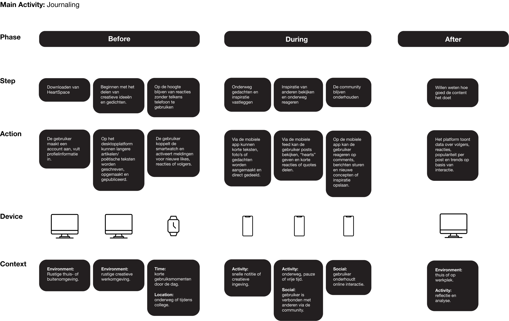
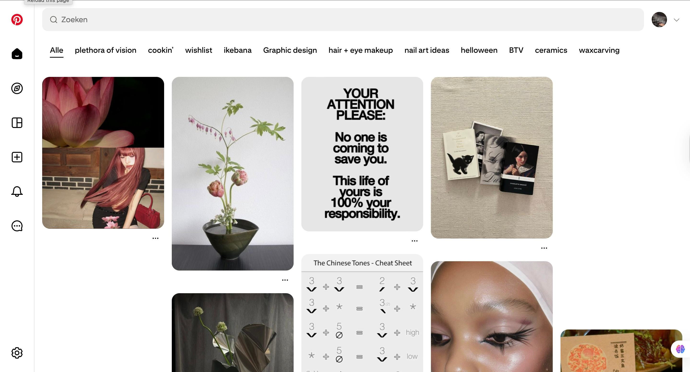
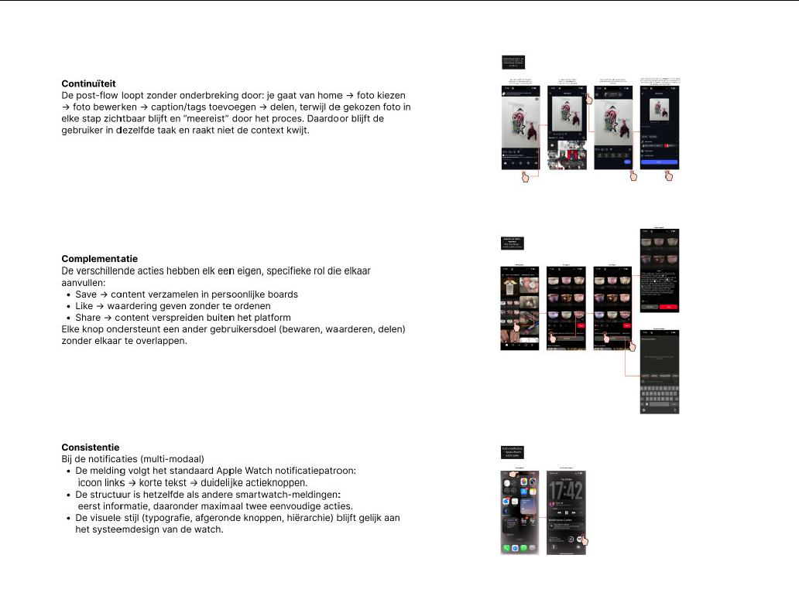
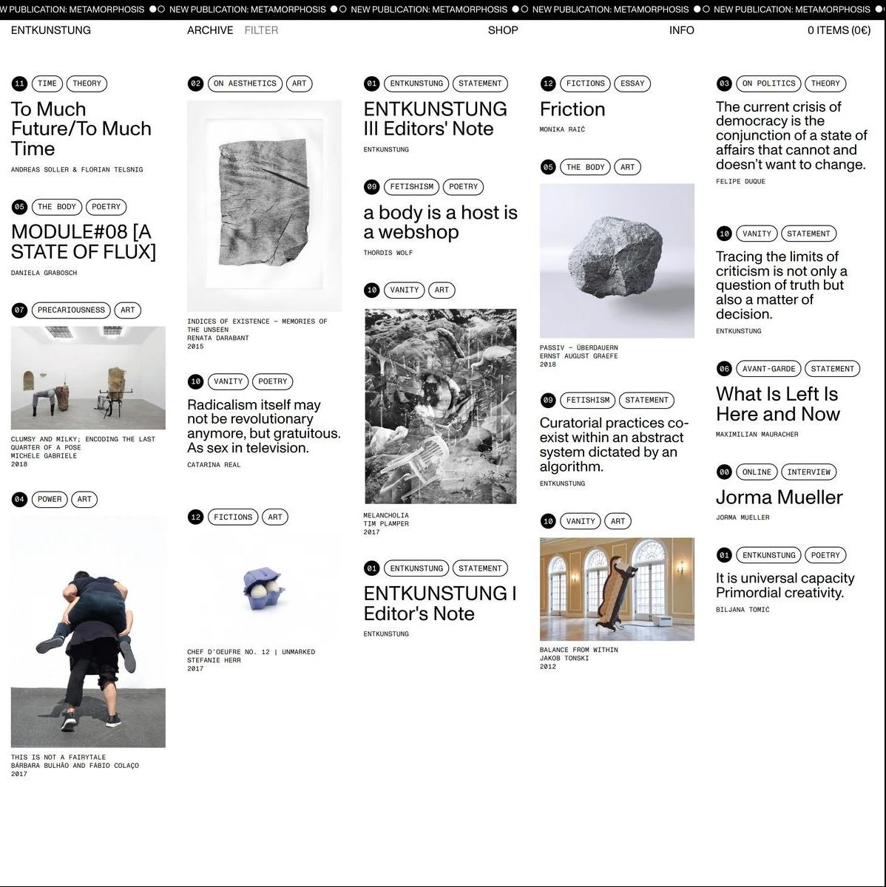
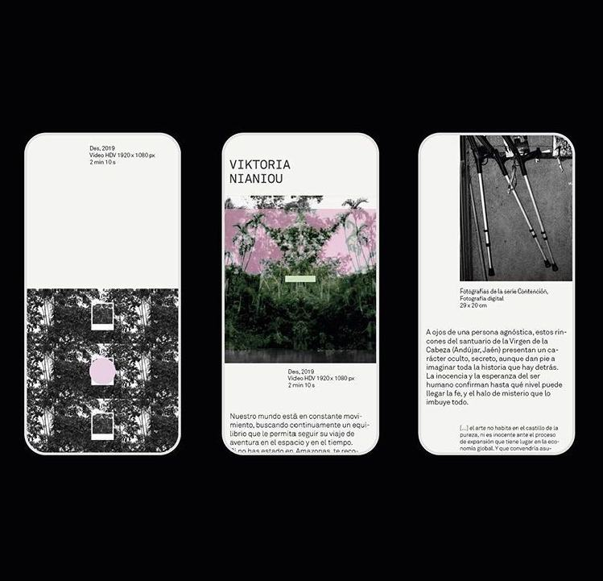
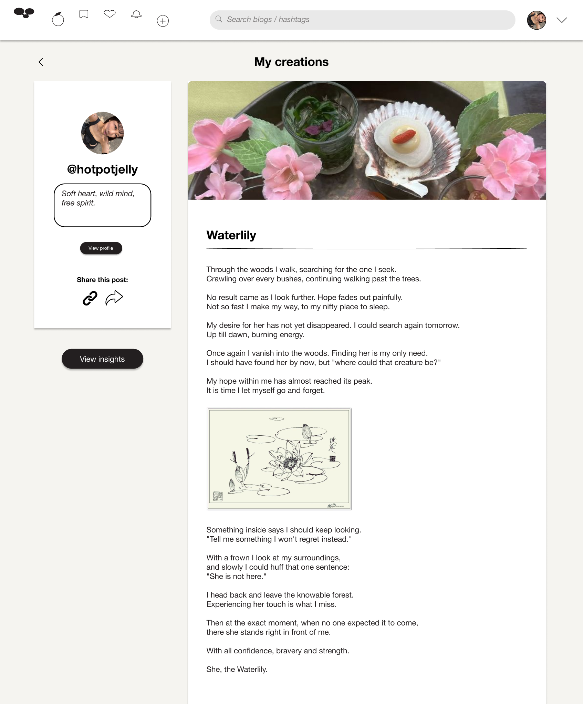

Challenge
Create a social product that supports expression without becoming noisy or overwhelming. The interface needed to feel familiar enough to use quickly, but softer than a typical feed.

Overview
The project explores how a social platform can feel less performative and more reflective. HeartSpace combines posting, inspiration saving, writing, feedback, and multi-device access into one product experience.
Challenge
Create a social product that supports expression without becoming noisy or overwhelming. The interface needed to feel familiar enough to use quickly, but softer than a typical feed.
Requirements
Users need to create posts, save inspiration, search by tags, receive feedback, and move between short mobile moments and longer desktop writing.
UX principles
I focused on calm hierarchy, low-friction creation, visible feedback, and enough space for emotional or reflective content.
Product requirements board
01Create short posts and longer reflections.
02Save inspiration and organise it through tags.
03Support feedback through likes, comments, shares, and insights.
04Continue the experience across mobile, desktop, and smartwatch notifications.

Research & patterns
I studied familiar interaction patterns from Instagram, Pinterest, and Apple Watch notifications. Instagram informed social posting and feedback, Pinterest informed saving and discovery, and Apple Watch inspired lightweight notification moments.


Wireflow
I developed the flow around clear entry points: create, search, save, react, and return to your own work. The goal was to make each action predictable across devices.
Iteration
Feedback helped simplify navigation and clarify the difference between browsing, collecting inspiration, and publishing a personal reflection.
UI states
I considered ideal, partial, error, and blank states so the interface could work beyond polished final screens.

Visual direction
The visual direction uses soft neutrals, generous spacing, rounded controls, and simple iconography. This keeps creative content central while giving the platform a quiet, supportive tone.


Final interface
The final screens bring the system together across desktop, mobile, and smartwatch touchpoints.



Outcome
HeartSpace became a complete UX/UI case study with product reasoning behind the screens. The final concept shows how research, requirements, wireflows, feedback, visual exploration, responsive layouts, and UI states can shape a calmer social platform.